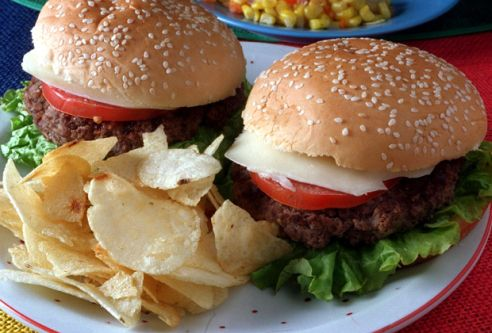
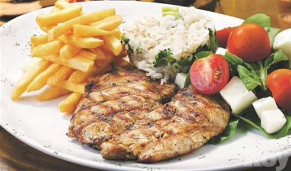
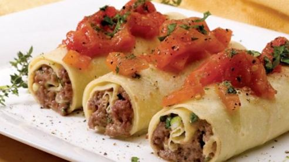
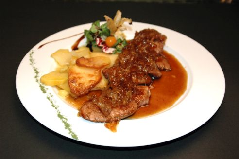
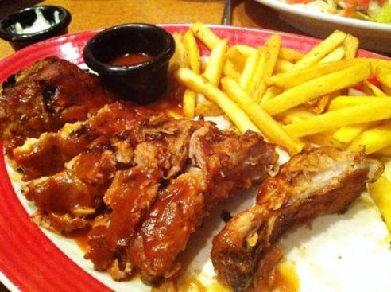
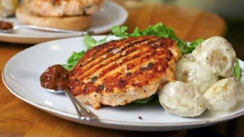
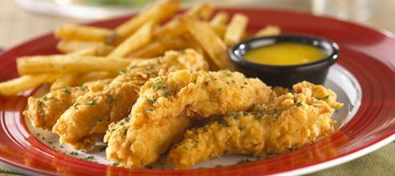

Nuestros Principales Platos
"Una comida bien preparada posee sabores delicados que hay que retener en la boca para apreciarlos".
      
• Los ofrecemos para usted de 12:00 am. a 15:00 pm.
• Restaurante "Camelot" © 2015 • Derechos Reservados • Desarrollado por Hernán Logioco